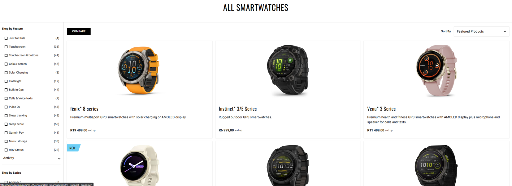
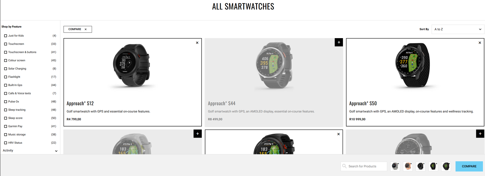
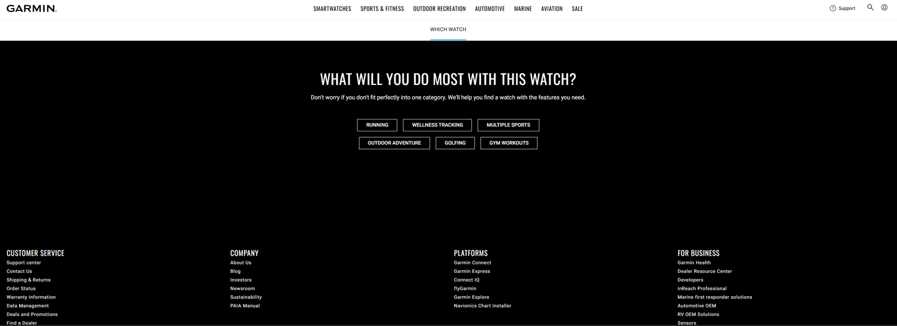
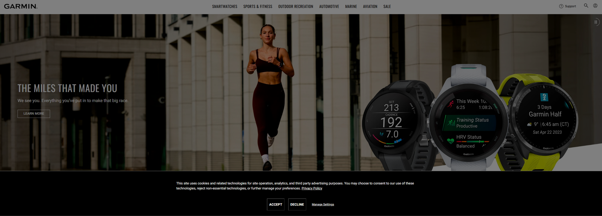
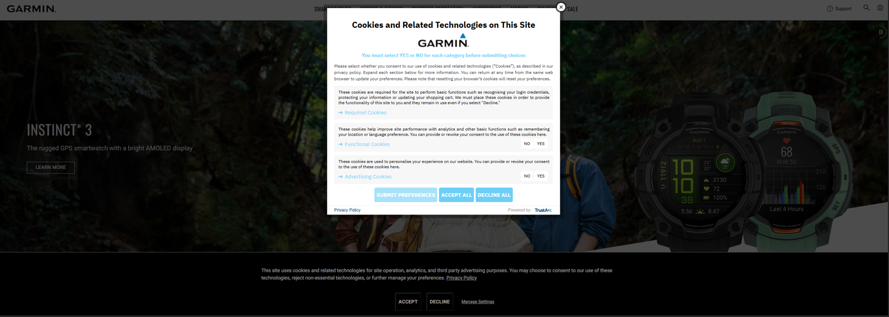

Interaction design through UI and UX
The choices made by web designers and the intention behind the design influence the ethical impact that the user interface (UI) and user experience (UX) have on users. This essay will analyse the UI and UX of the Garmin [1] website and the ethical web design in terms of the privacy and transparency available to users. Garmin is a well-known sport watch company, and the website displays information about various sport watches and navigation driven devices.
UI and UX:
The first page seen is the homepage which shows a series of large images of various watch versions that Garmin is offering. There is minimal text shown on each image to allow the user to view the image and easily read the watch version shown. Under each version name is a short description of the purpose of the watch or what the user can expect to read more about after selecting the “learn more” button. This shows the user a range of products that are offered without forcing the user to a new or specific product.
There is the option to pause the automatic scrolling of the images as this can become a distraction for the user or might move too quickly. Around the pause button icon, there is a circle which indicates to the user of the duration until the next image will show. However, for some of the images the button is not visible as it is against a white or light background and the colour of this button does not change to a more contrasting colour to ensure visibility to the user. This contradicts to the UI principle of accessibility that can been seen in the Web Content Accessibility Guidelines (WCAG) that account for users with visual impairments. This can be fixed with the change of colour when the images are shown or simply creating a background for the button that will consistently contrast with any image used.
There is a consistency with the button to the products shown on information cards. The buttons on the cards filled with the images change from white text and a white border to a button with black text, a filled white button background and a black border when the button is hovered on. The opposite happens with the buttons on the cards which have images on three-quarters of the card and the button placed on the bottom right corner. These cards have the button change from black text and a black border to a button with a black background and white text. This design choice makes it easy for users to understand that the buttons will allow the user to view more information about the selected product.
This is present on all the pages on the website and ensures that the consistency of the user interface does not change and therefore keeps the user under the impression that if these buttons were interacted with, they would lead to the pages containing the products shown on the cards. The useability of these buttons is also present on each information card as a whole. The user is not required to only select the buttons, but the card has the same effect as the button to include users that may not precisely click on the buttons.
The newest products are not shown as the first item in the list which indicates that Garmin is not trying to sell the newest and most expensive item to customers first. This does not make use of dark patterns or tricks like fake scarcity [2] or fake urgency [3]. This design choice chooses to avoid manipulation or pressure on users and instead focuses on the ethical design for useability. 
There is a compare button available to allow users to compare watches from a minimum of two to a maximum of five watches which shows a range of differences between the selected watches. This can help a user freely access an easy way to compare features of different watches without having to manually create a list of differences or read an article or blog created by another person on a different website. This improves the user experience which allows a convenient way for users to gather more information about various watches. 
Another user experience design that is present on the website is the ability to choose a category of activity that the user is most interested in, and the website will filter the watch versions that caters more to a certain category. This helps a user seamlessly view watches without feeling overwhelmed by the number of available products with many different features included. 
Cookies and transparency:
Transparency of a website can be seen in the disclosure of data collection, cookie usage, pricing, and terms of service.
Cookies on a website contain information about the user's engagement with the webpage which can improve the user experience. An article by Kaspersky explains what website cookies are and details the differences between first-party and third-party cookies [4] which involve analytics used by the current website and websites that are usually linked to appearing ads.
The outcome of the design choice to immediately overlay the homepage with the cookie disclaimer indicates to the user that there will be cookies. The user has the ability to change their preferences with regards to the cookies on the website. It is shown at the end of each page in the footer section along with links to more information about the Garmin company, services to customers ordering and buying products. The button is the only item in the footer that is underlined and in a bigger font size than the other footer items like the “Contact Us”, “Blog”, etc. This allows a user to easily find and navigate to the “Cookie Preferences”. This is important for users to easily accept or decline, or change, the collection and use of their information for targeted marketing purposes or convenience of login details and functionality of the website.
The user can read more about each section with links to third-party companies and their domains that are associated with the cookies and collection of information on Garmin. There are also links to the Terms and Conditions and the Privacy Policy of each company that is involved with Garmin's related technologies and cookies on this website. This is an ethical practice that the company and designers chose to include in their website to allow users to have control and have a positive perception on the use and collection of their information.  
A study was conducted on the privacy-related decisions and the perception of cookies on users which had found that users often agree to cookie disclaimers without realising what the outcomes of their privacy will be [5]. Although privacy policies are available to users, often users will accept or decline cookies without reading the privacy policy to continue engaging with the content of the website. As seen on the Garmin website, the privacy policy is underlined in the short explanation of the cookies, however only the “accept” and “decline” words are placed in boxes. This makes use of Von Restoff effect [6] which makes the words standout to the user and reduces the time required by the user on the cookies. This can lead a user to not read and think more about the usage of their data on the website. The website can make use of a short description or a way for the user to want to learn more about how the website uses the data collected to have control over their privacy and information.
My analysis of the UI and UX design on Garmin show how the decisions made reflect the intention to expose and inform users and customers on various products offered with constant design choices. There is an indication of privacy information used and collected however a few adjustments could be made in order to encourage users to engage more with their data privacy.
References:
[1] Garmin. Accessed: 30 Mar. 2025. [Online]. Available: Garmin Official Site | South Africa
[2] H. Brignull, M. Leiser, C. Santos, K. Doshi., "Deceptive Patterns – Fake scarcity". Accessed: 9 Apr. 2025. [Online]. Available: Deceptive Patterns – Types – Fake scarcity
[3] H. Brignull, M. Leiser, C. Santos, K. Doshi., "Deceptive Patterns – Fake urgency". Accessed: 9 Apr. 2025. [Online]. Available: Deceptive Patterns – Types – Fake urgency
[4] Kasperky. Accessed: 20 Apr. 2025. [Online]. Accessed: What Are Internet Cookies and What Do They Do? | Kaspersky
[5] O. Kulyk, A. Hilt, N. Gerber, M. Volkamer., "This Website Uses Cookies”: Users' Perceptions and Reactions to the Cookie Disclaimer. . Accessed: 20 Apr. 2025. [Online]. Available: "This Website Uses Cookies”: Users' Perceptions and Reactions to the Cookie Disclaimer
[6] Practical Psychology. Accessed: 21 Apr. 2025. [Online]. Available: The Von Restorff Effect - Practical Psychology